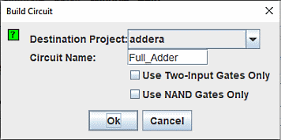

生成电路
构建电路 按钮将构建一个电路，其门对应于当前为每个输出选择的表达式。 电路的输入和输出将以自上而下的顺序显示，对应于它们在“输入”和“输出”选项卡下的显示方式。 一般来说，构建的电路会很有吸引力； 事实上，Logisim 组合分析模块的应用之一就是美化绘制不佳的电路。 尽管如此，与任何自动格式化一样，它不会表达人工绘制电路所表达的结构细节。

当您单击 构建电路 按钮时，将出现一个对话框，提示您选择要在其中放置电路的项目以及要为其指定的名称。

如果您键入现有电路的名称，则该电路将被替换（在 Logisim-evolution 提示您确认确实要执行此操作之后）。
构建电路 对话框包含两个选项。
- 仅使用两个输入门 选项指定您希望所有构建的门都具有两个输入。 （当然，“非”门构成了该规则的一个例外。）
- 仅使用 NAND 门 选项指定您希望将电路转换为仅使用 NAND 门的电路。 如果您只想使用双输入 NAND 门，则可以选择这两个选项。
Logisim-evolution 无法为包含任何 XOR 运算符的表达式构造仅 NAND 电路。 因此，如果任何输出的表达式包含 XOR，则该选项将被禁用。
下一步： 用户指南 。